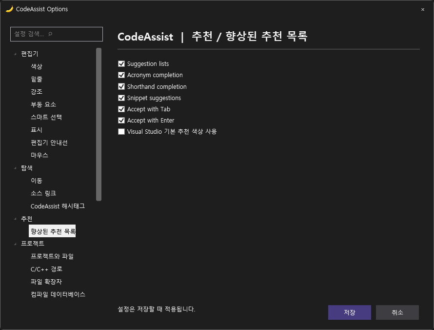
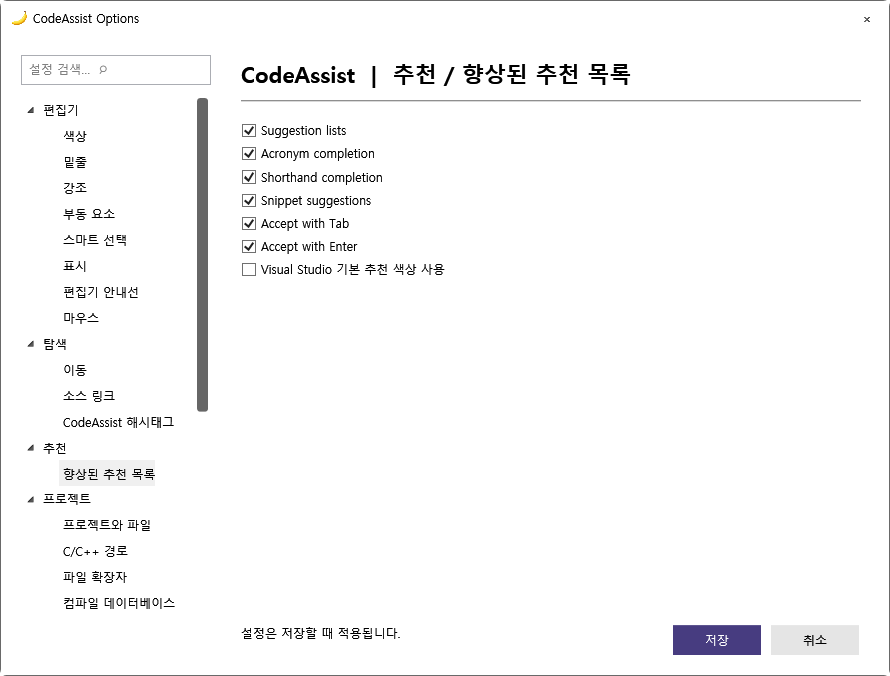

Tracefolio REPORTS & ISSUES
Tracefolio REPORTS & ISSUES5개 항목 결과 · 0.0.79
기존 기록 이전5개 항목 결과 · 0.0.79 — 당시 작업 내용과 검증 범위를 원문 기준으로 정리한 보관 기록입니다.
보관 기록 · 결과와 검증 범위는 원문 작성 시점을 기준으로 읽어주세요.
보관 기록입니다. 아래 결과는 원문 작성 시점의 내용이며, 이번 편집에서 제품 테스트를 다시 실행하지 않았습니다.
원래 항목 범위를 유지한 결과입니다. 전체 완수 여부를 축소한 기준으로 바꾸지 않습니다.
| 번호 | 요청 | 상태 | 결과와 남은 범위 |
|---|---|---|---|
| 1 | 확인된 오류 3종 수정 | 완수 | 심볼19개 확인 · Alt+Shift+O로 프로젝트 파일3개 확인 · 문맥 정의 오선택 수정 남음: |
| 2 | 부분 구현 보완 | 부분 완료 | 설명 위주 옵션3페이지를 실제 설정 연결 · Tab/Enter 추천 확정 설정 · 전체 키 바인딩 적용 검사 통과 · 실제 편집기14개 및 생성C++6개 통과 남음: 리팩터링 전체 지원 범위·참조 갱신·Undo 및 모든 옵션 완성 |
| 3 | 108개 실제 VA 기능 대조 | 미완료 | 남음: 108개 전체 동일 입력·설정·예외 처리 대조 |
| 4 | Unreal 성능 측정 | 부분 완료 | 지정 실제 프로젝트 소스 인덱싱497.92ms 남음: VA와 IDE 시작·엔진 인덱싱·타이핑·검색 응답 전체 대조 |
| 5 | UI 마무리 | 부분 완료 | VA 실제 옵션 화면 대조 · 추천 옵션 다크·라이트 렌더 및 테마 전환 남음: 전체 옵션 배치와 VA 라이트 기본 색상 대조 |
소스252개·실제 편집기14개·생성 C++6개 통과. 전체 제품 유사도 미산정, 부분 대응108/108·전체 검증완료0/108.
번호별 원자료 · 키 적용 결과 · 실제 편집기 결과 · Unreal 인덱싱 · 패키지 · 설치


원문과 편집 이력
- 원문 SHA-256:
439ba32ee2666796020fa7a47107609bbd0dfe7c55bc639d9c5be8dd453c1480 - 표시 날짜는 원본 파일의 수정 시각입니다. 작업 완료 시각은 원문에 있는 값을 기준으로 확인합니다.